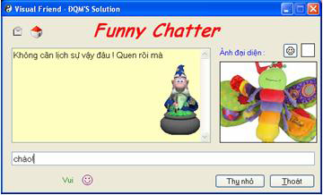

Hướng Dẫn Sử Dụng 1
V 2.4.7.6

Yêu cầu hệ thống :
- CPU: Pentium or AMD ( tối thiểu PIII ~ 600 MHZ )
- RAM : Tối thiểu 128MB
- VGA : Tối thiểu 2M
- Windows All Version
- Microsoft .Net FrameWork v1.1 trở lên ( Download v1.1 )
Chú ý :
- Bạn phải giao tiếp với chương trình bằng tiếng Việt có dấu
- Do chương trình đã tích hợp bộ gõ nên nếu bạn đang sử dụng các bộ gõ (UniKey,VietKey...)
thì hãy Disable nó đi hoặc chuyển sang bảng mã Unicode
- Bạn phải xưng hô "mày-tao" với chương trình ( Nếu bạn lịch sự với nó thì nó cũng xưng hô "mày tao" thôi ! )
1 vài chức năng cơ bản :
- Đây là chatbot nên chat là 1 chức năng không thể thiếu được
- Khả năng làm toán :
(User : là câu bạn gõ vào ; AI : là câu chương trình trả lời ; [ ] là chú thích của tôi, bạn không nên gõ vào)
User : 45/5+5*9+8^2 [ dấu "%" là chia dư ; dấu "^" là tính lũy thừa]
AI : Dễ ẹt ! Là 118 !
User : mười lăm cộng năm mươi bằng mấy ?
AI : ... 65
- Bạn cũng có thể gọi máy tính của Windows : gõ vào sao cho có cụm từ "tính toán" hoặc "dùng máy tính"
VD : "tao muốn tính toán" "tao cần dùng máy tính"
- Bạn có thể chat, lướt web, và giải trí với nó dễ dàng : ( In đậm là các từ khóa cần có )
VD: "tao muốn coi phim" " tao cần nghe nhạc" "tao muốn lướt web" "nghe nhạc" "xem phim" ...
=> Mở Windows Media Player, Internet Explorer cho bạn
"tao muốn tìm kiếm ... " , "tao cần tìm ..." ,"tìm kiếm...","tra cứu..."
=> Mở Website tìm kiếm cho bạn ( Google )
- Dọn rác,dồn ( chống phân mảnh ) ổ đĩa :
VD: "dọn dẹp đĩa dùm tao","tao muốn dọn ổ đĩa",... [=> Xóa những file rác của Windows ]
"tao muốn dồn đĩa ." , "tiến hành chống phân mảnh ổ đĩa coi" [ Gọi Disk Defragmenter của Windows ]
- Khởi động các chương trình mặc định ( như Start > Run > ... )
Công thức : Từ khóa + Tên chương trình [+ Cái gì đó tùy thích ]
Từ khóa : 1 trong các từ sau : run , open , mở , khởi động
Tên chương trình : là những từ mà bạn có thể gõ trong mục Start -> Run
Trong MS Windows có sẵn vài chương trình sau:
+ pbrush : MS paint quen thuộc đây (vẽ hình đó)
+ wmplayer : Windows media player đây
+ wordpad : Mở Word pad của Windows
+ write : mở Notepad của Windows
+ charmap : xem các kí tự có trong font
+ cmd : command prompt đó
+ taskmgr : Task manager
...........
VD: "open
wmplayer" "khởi động
pbrush
dùm tao" ...
Khi bạn gõ vào "run winrar", "open winrar" hoặc "khởi động winrar" (không có dấu ngoặc kép) thì chương trình sẽ khởi động WinRar cho bạn (nếu máy bạn có cài Winrar )
==>
Muốn biết thêm những tính năng mạnh khác như "Quản lí hệ thống" và "dạy dỗ AI"
Thì hãy xem HDSD 2 & 3